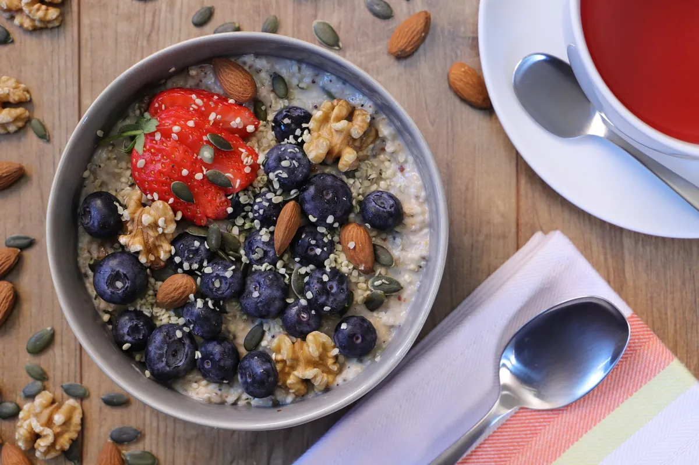
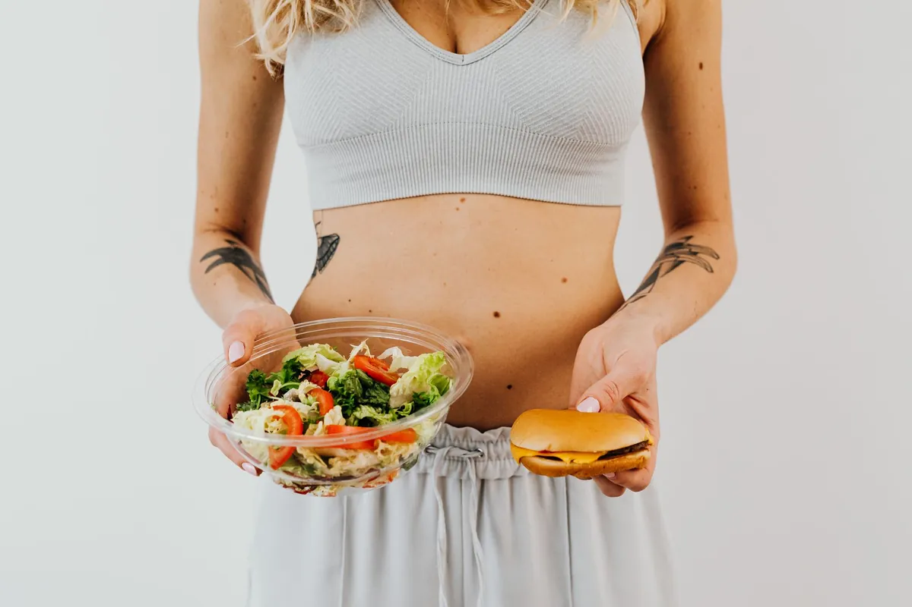

Top Longevity Foods for Optimal Brain Health & Cognitive Function: My Secret Weapons

Key takeaways
- I remember staring at my laptop screen, the words blurring together.
- It was a Tuesday afternoon, and I felt like my brain had checked out for the day.
- Track what feels sustainable and adjust gradually.
I remember staring at my laptop screen, the words blurring together. It was a Tuesday afternoon, and I felt like my brain had checked out for the day. Foggy, slow, and definitely not at its peak. Sound familiar? For years, I battled this mental fatigue, thinking it was just part of getting older or the stress of daily life. But then I started digging into the science of **Top Longevity Foods for Optimal Brain Health & Cognitive Function**, and everything changed. It wasn't about magic pills; it was about what I was putting on my plate.
My journey led me to understand that certain foods are like superheroes for our brains, helping to protect against decline and boost memory, focus, and overall clarity. Think of it as fueling your brain with the best possible ingredients. It's not about perfection; it's about making smarter, tastier choices that add up over time.
Let's talk about blueberries. I used to grab a handful of sugary cereal, but now, a bowl of blueberries is my go-to. These little powerhouses are packed with antioxidants called anthocyanins. Studies suggest these compounds can cross the blood-brain barrier and improve communication between brain cells. I find that a morning smoothie with blueberries makes a noticeable difference in my mid-morning focus. It's a simple swap that yields big results.
Then there are fatty fish like salmon. I'll admit, I wasn't always a fan of fish, but finding a good recipe for baked salmon changed my tune. Salmon is rich in omega-3 fatty acids, specifically DHA. Our brains are about 60% fat, and DHA is a crucial building block for brain cells. It's essential for learning and memory. Aiming for at least two servings a week has become a non-negotiable for me. It’s one of the **Top Longevity Foods for Optimal Brain Health & Cognitive Function** that I swear by.
Walnuts are another brain-boosting superstar. They look like tiny brains, which is a fun coincidence, right? They're loaded with healthy fats, antioxidants, and vitamin E. Vitamin E protects cell membranes from free radical damage, which can help slow cognitive decline. I toss a small handful into my salads or yogurt. It's a crunchy, satisfying snack that’s incredibly good for you. This is a prime example of how simple additions can contribute to long-term **longevity**.
Broccoli might not be the most glamorous food, but it's a nutritional powerhouse. It's full of antioxidants and vitamin K. Vitamin K is essential for forming sphingolipids, a type of fat densely packed into brain cells. I used to dread eating my veggies, but roasting broccoli with a little garlic and olive oil makes it surprisingly delicious. This is a key part of my strategy for maintaining cognitive function.
Dark chocolate, in moderation, is surprisingly good for your brain. Look for varieties with 70% or higher cocoa content. Cocoa is rich in flavonoids, which have antioxidant and anti-inflammatory effects. They can improve blood flow to the brain and enhance cognitive performance. A small square after dinner is my little indulgence that also happens to be a brain booster. It’s a sweet way to practice **healthy-habits**.
Turmeric, the vibrant spice, contains curcumin, a compound with powerful anti-inflammatory and antioxidant benefits. Inflammation is a major driver of brain aging. Curcumin can cross the blood-brain barrier, and studies suggest it may help improve memory and boost mood. I add turmeric to my morning eggs and curries. It's a simple way to incorporate a potent anti-inflammatory agent into your diet. Learn more about [anti-inflammatory] foods here.
The 2-Minute Win
Right now, grab a small handful of walnuts or a few squares of dark chocolate (70%+ cocoa). This is an immediate, simple action you can take to nourish your brain. It's a small step towards better cognitive function and overall **longevity**.
Extra virgin olive oil is another cornerstone of brain health. I always keep a good quality bottle on hand. It's rich in monounsaturated fats and polyphenols, which have been linked to improved memory and reduced risk of cognitive decline. Drizzling it over salads, using it for sautéing, or even just dipping bread into it are easy ways to reap its benefits. If you're looking for a quality option, consider exploring [Extra Virgin Olive Oil](https://www.amazon.com/s?k=extra+virgin+olive+oil). It’s a staple for anyone interested in **Top Longevity Foods for Optimal Brain Health & Cognitive Function**.
Green tea is something I drink daily. It contains caffeine, which can improve alertness and focus, but also L-theanine, an amino acid that promotes relaxation without drowsiness. This combination can lead to a state of calm focus. It's a fantastic alternative to coffee if you're sensitive to jitters. This ties into the importance of [gut] health for the brain, as a healthy gut microbiome can influence neurotransmitter production. Explore more [mental-wellness] guides here.
Don't forget the power of leafy greens like spinach and kale. They are packed with nutrients like vitamin E, vitamin K, folate, and beta-carotene, all of which are crucial for brain health. I try to include them in at least one meal a day, whether in a salad, smoothie, or stir-fry. Consistency is key, and this is a great [another practical guide] to help you stay consistent with this.
Pumpkin seeds are a fantastic source of magnesium, iron, zinc, and copper. These minerals are all vital for brain function. Zinc is crucial for nerve signaling, while magnesium plays a role in learning and memory. I sprinkle them on my oatmeal or eat them as a quick snack. They’re a small but mighty addition to your diet.
Eggs are another affordable and accessible brain food. They contain choline, a nutrient that the body uses to create acetylcholine, a neurotransmitter that helps regulate mood and memory. I often have scrambled eggs for breakfast or add hard-boiled eggs to my salads. It’s a simple way to get a dose of brain-boosting nutrients. This relates to [similar wellness insight] about nutrient timing.
Incorporating these **Top Longevity Foods for Optimal Brain Health & Cognitive Function** isn't about overhauling your entire life overnight. It's about making small, intentional changes. Start with one or two foods that appeal to you and build from there. Remember, it's a marathon, not a sprint. For more tips on how to [stay consistent with this] habit, check out this related healthy tip.
Educational only — not medical advice.
Disclosure: This page may contain affiliate links.
Recommended Reading
- Daily Gratitude Practice: Boost Mood & Reduce Stress Naturally
- Top Biohacking Supplements for Longevity & Peak Performance: NMN, Resveratrol, and Omega-3s
- Unlock Your Brain Power with This Olive Oil Secret
More in longevity

longevityUnlock Longevity: The Surprising Power of Eating Less Protein
Unlock longevity! Discover the surprising power of eating less protein for a healthier, longer life. Learn how this diet
Read article →Intermittent Fasting for Longevity: Unlock Your Healthspan
Discover how Intermittent Fasting for Longevity can unlock your healthspan. Learn the science behind cellular repair and
Read article →